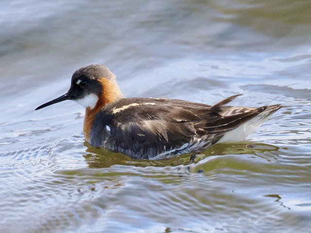
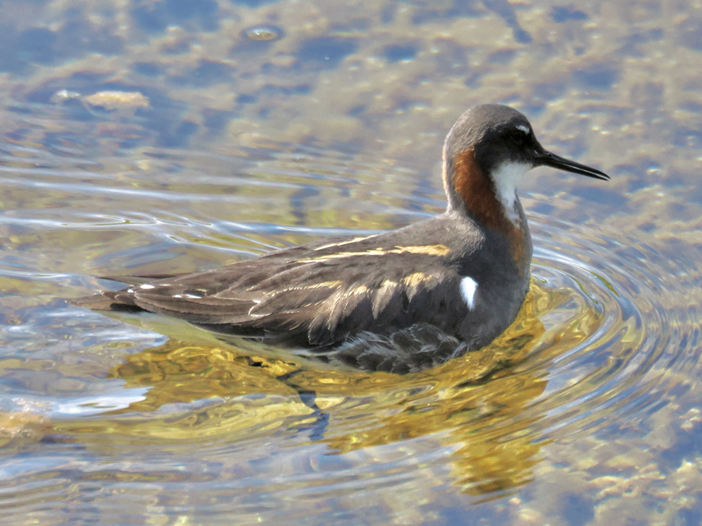

Red-Necked Phalarope
Phalaropus lobatus
Order: Charadriiformes
Family: Scolopacidae

A tiny wader with a slender neck and very fine bill. In breeding plumage, has a black crown and mask, white throat, and rufous neck. Female is more brightly coloured, where the red of the neck extends to the front. A polyandrous species, the female mates with multiple males, leaving the male to raise the chicks.

Breeding male has less extensive red on the neck. Feeds by going around in circles in a hurried pace.